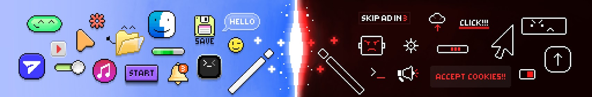

En muchos de los sistemas operativos de tipo Linux, al no ser a lo que la mayoría de la gente está acostumbrada, es necesario pasar por una curva de aprendizaje. Para ello, el método más recomendado para aprender el uso de estos sistemas es el “Troubleshooting”, o explicado en castellano, aprender haciendo a base de prueba y error. Es decir, para aprender Linux la mejor manera es, más que empezar a absorber montones de teoría, es poner lo que sepa a prueba e ir aprendiendo a base de solucionar los errores que vayan surgiendo.
Para ellos, es necesario tener un lugar donde consultar las dudas y los problemas que aparezcan. Uno de esos recursos es la conocida enciclopedia de Arch Linux, un lugar donde se encuentra desde los pasos para instalar el sistema operativo, hasta numerosos artículos de documentación explicando todos los aspectos necesarios.
Aparte de los materiales escritos en la red, numerosas personas dedican sus canales de contenido a subir guías y diferentes videos explicativos sobre Linux. Entre ellas, destaco las siguientes:
[Beep boop! Me gustan los cacharritos y las consolitas, también hablar mucho]
["diinki"- noun: 1. An endangered species of forest goblins 2. idm any pronouns 🐱]

[subscribe for more cats (and design content, of course) this is my only channel on YouTube. if you’d like to contact me, use the contact email below. ]